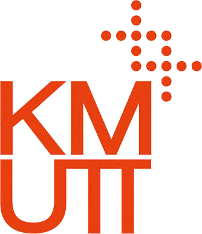
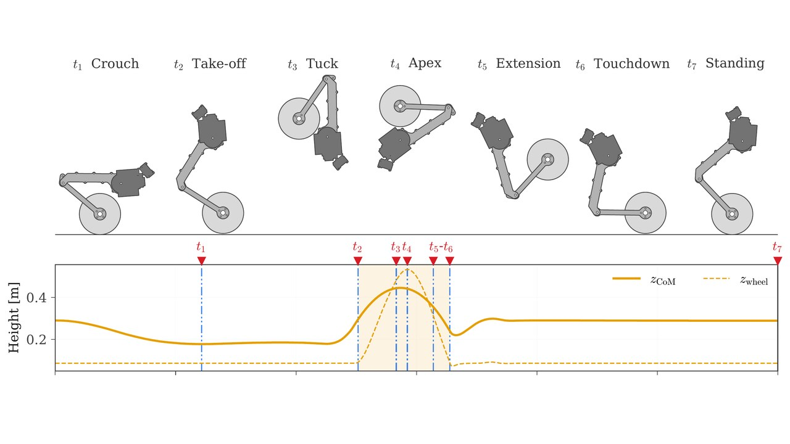
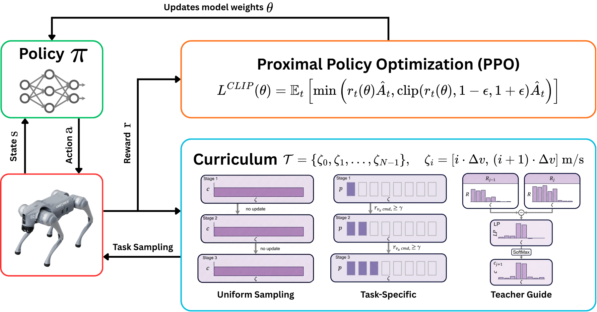
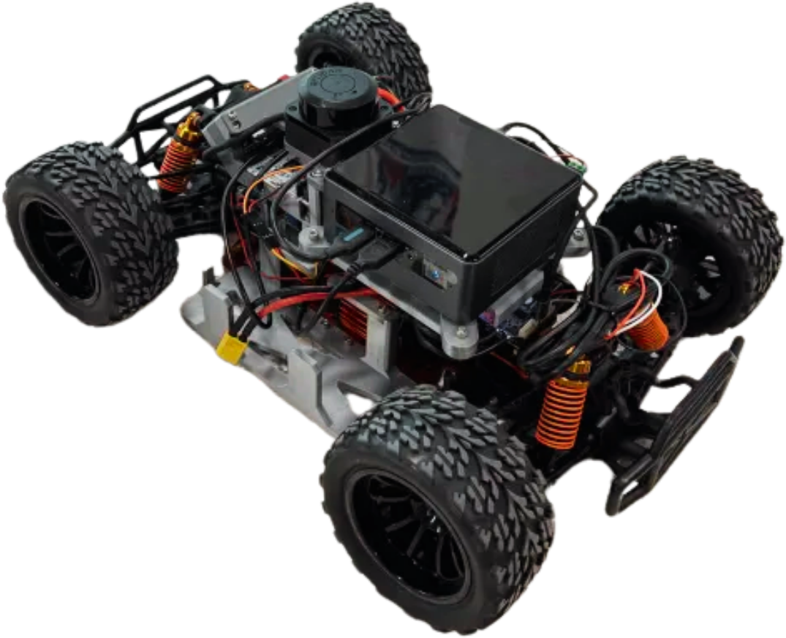
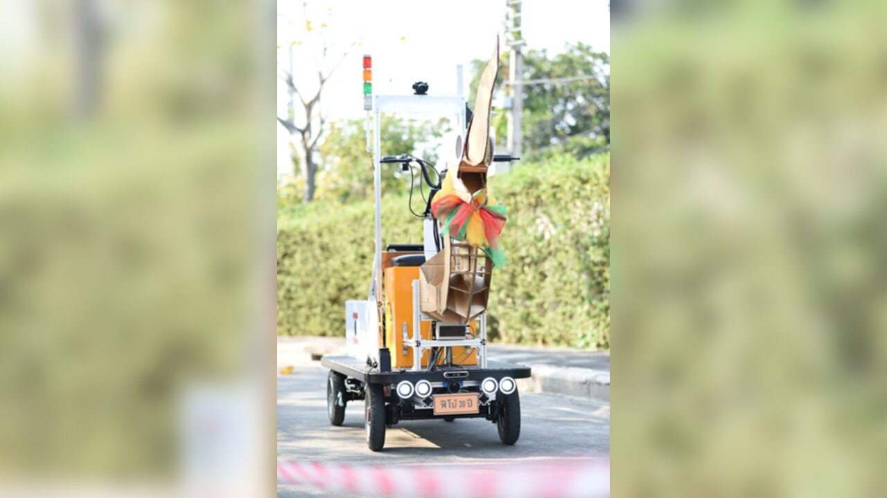
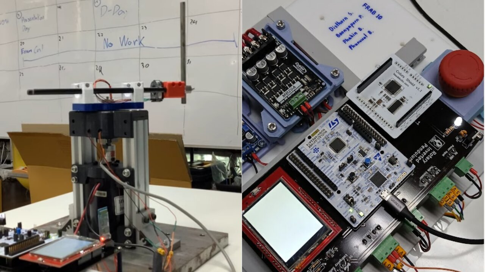
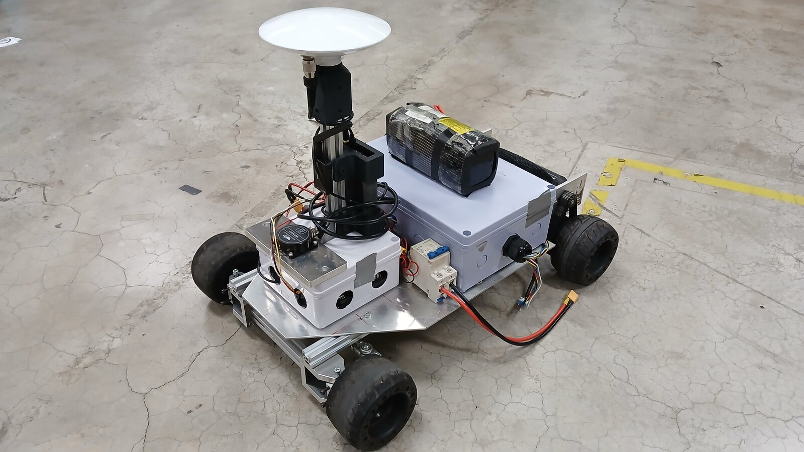
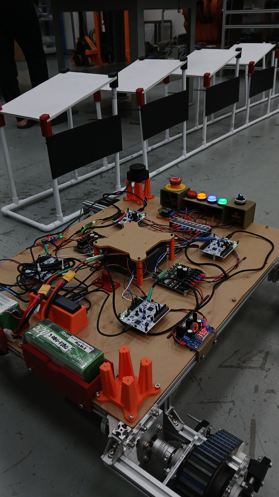
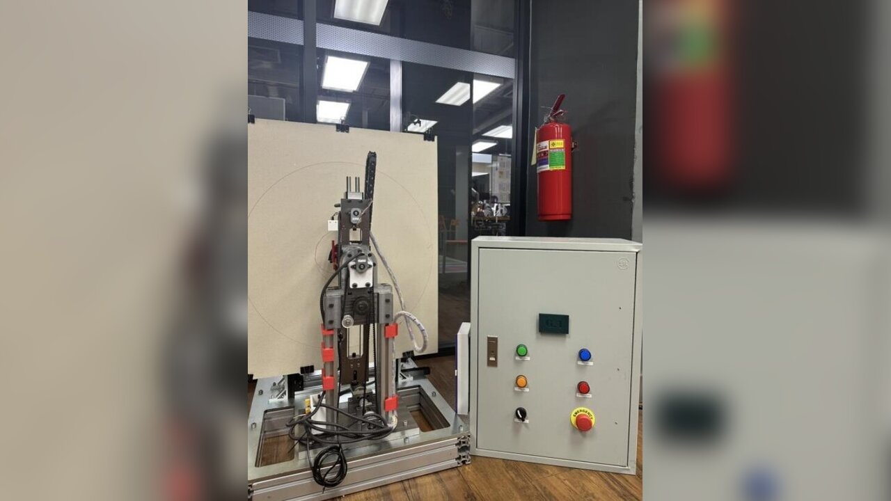

Phakin
Boonchanachai
Robotics & Automation Engineering Student · Bangkok, Thailand
I work across the full robotics stack, from sensor driver firmware up to high-level autonomy. My projects have ranged over mobile robots, wheeled and legged locomotion, manipulation, control, deep reinforcement learning, and embedded firmware.
My goal is to build robots that become part of everyday life, and are for once actually intelligent. For graduate study, I want to research learning-based control that combines model-based structure with reinforcement learning, applied to wheeled and legged robots.
Open to PhD positions and robotics engineering roles.
Education

King Mongkut's University of Technology Thonburi
Bachelor of Engineering in Robotics and Automation Engineering
Institute of Field Robotics (FIBO)
2023 – 2027 (expected)
Cumulative GPA 3.94 / 4.00
Petchra Pra Jom Klao Scholarship
Publications
- 2027
OTTO: Dynamics and Control of Wheeled Bipedal Somersaulting Robot
IEEE International Conference on Robotics and Automation (ICRA)
Under review
A planning and control framework for the forward somersault of a wheeled bipedal robot. Instead of fixing the landing state in advance, the plan bounds the touchdown pitch rate and lands on the recovery controller's own equilibrium. Stance and flight are optimized together on the full-order dynamics, and an NMPC tracks the plan during stance.
- 2026
Whole Body Compliance Control for Mobile Manipulators
IEEE/ASME International Conference on Advanced Intelligent Mechatronics (AIM)
Genova, ItalyPublished
A whole-body compliance controller that treats the mobile base and arm as one kinematic chain in a single quadratic program. Force regulation is a weighted soft task, so contact force takes priority over trajectory tracking when both cannot be met. It runs unchanged on holonomic and nonholonomic platforms.
Projects

 Institute of Field Robotics (FIBO), KMUTT
Institute of Field Robotics (FIBO), KMUTTOTTO: Dynamics and Control of Wheeled Bipedal Somersaulting Robot

 A*STAR ARTC, Singapore
A*STAR ARTC, SingaporeWhole Body Compliance Control for Mobile Manipulators
Institute of Field Robotics (FIBO), KMUTTReinforcement Learning for Wheeled Bipedal Locomotion

Institute of Field Robotics (FIBO), KMUTTCurriculum Learning for Velocity Tracking on Unitree Go2

Institute of Field Robotics (FIBO), KMUTTObstacle Avoidance Strategies on an F1TENTH Racing Car

Institute of Field Robotics (FIBO), KMUTTAutonomous Ackermann Navigation with 3D LiDAR Localization

Institute of Field Robotics (FIBO), KMUTTHybrid Energy-LQR Control of a Rotary Inverted Pendulum

 Gensurv Robotics
Gensurv RoboticsRTK-GNSS Navigation for a 1/5-Scale Autonomous Car

Institute of Field Robotics (FIBO), KMUTTSolar Panel Cleaning and Transport Robots, EGAT Sirindhorn Dam

Institute of Field Robotics (FIBO), KMUTTRP Plotter, a 2-DOF Robotic Arm with Revolute and Prismatic Joints
Experience
- December 2025 – March 2026
A*STAR Advanced Remanufacturing and Technology Centre (ARTC), Singapore
Research Intern, Singapore International Pre-Graduate Award (SIPGA)
Developed a whole-body compliance controller for mobile manipulators, published at IEEE/ASME AIM 2026.
- August 2024 – Present
Institute of Field Robotics (FIBO), King Mongkut's University of Technology Thonburi
Supports lectures and laboratory sessions across six courses, designs lab exercises, and mentors student teams.
- June 2025 – July 2025
Gensurv Robotics, Bangkok, Thailand
Robotics Software Engineer Intern
Built RTK-GNSS navigation with Lanelet2 HD maps for a 1/5-scale car, reaching localization below 10 cm.
- August 2024 – November 2025
Institute of Field Robotics (FIBO), King Mongkut's University of Technology Thonburi
Developed navigation and docking for solar panel cleaning and transport robots at Sirindhorn Dam for the Electricity Generating Authority of Thailand (EGAT).
Honors & Awards
- July 2025
Singapore International Pre-Graduate Award (SIPGA), A*STAR
Research fellow
Selected as a research fellow under the Princess IT Foundation scholarship initiative.
- May 2023
Petchra Pra Jom Klao Scholarship for Innovation, King Mongkut's University of Technology Thonburi
Full academic scholarship
Awarded for outstanding academic performance and innovation potential.
Leadership & Activities
- January 2024 – May 2025
FIBOX Club, Robotics Competition Club
President and Founder
Founded the club and led 40 members, with a dedicated workshop, tools, and sponsorships across mechanical, electronics, and software divisions.
- January 2024 – June 2025
TPA Robot Contest Thailand Championship 2025, Pathum Thani, Thailand
Team Leader, Autonomous and Manual Robot Mission
Led four divisions and built ROS 2 control for omnidirectional Mecanum movement, with localization from wheel odometry and IMU.
Open Source
- Micro-ROS-with-Nucleo-board
Generates a ready-to-flash micro-ROS STM32CubeIDE project that runs on FreeRTOS. - ROS2_pkg_generator
Generates a ROS 2 package from a template, either combined C++ and Python or interface-only. - SerialFrame
A C library that sends binary UART frames between STM32 and MATLAB/Simulink. - BNO055_uros
STM32 drivers for the BNO055 IMU that handle calibration, micro-ROS publishing, and ROS 2 processing over DMA I2C at 100 Hz.